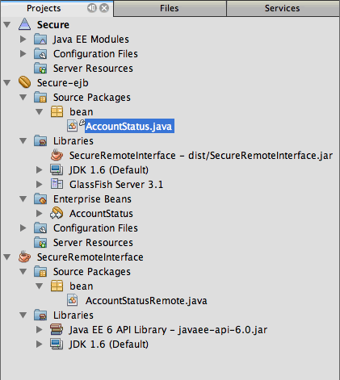

Apache NetBeans
Apache NetBeansJust released!
Создание безопасных компонентов EJB в Java EE
| This tutorial needs a review. You can open a JIRA issue, or edit it in GitHub following these contribution guidelines. |
Поддержка спецификации Java EE в IDE NetBeans позволяет полностью воспользоваться многими преимуществами функций Java EE, что позволит упростить разработку приложений. Значительным улучшением спецификации Java EE 5 было включение аннотаций. Использование аннотаций позволяет устранить множество кода заглушек, используемого при написании кода приложений, и уменьшает объем необходимой настройки при развертывании приложения.
Использование аннотаций значительно упростило разработку и настройку компонентов EJB. Аннотации позволяют указывать множество свойств настройки, которые ранее указывались в файлах дескриптора развертывания, что устраняет необходимость во множестве таких файлов. Хотя для приложений все еще могут требоваться некоторые файлы дескриптора развертывания (например, web.xml ), редактор дескриптора развертывания с несколькими представлениями среды IDE значительно упрощает изменение файлов.
Аннотации упрощают создание безопасных компонентов EJB. Вместо настройки безопасности компонента EJB в дескрипторе развертывания ejb-jar.xml можно использовать аннотации безопасности для настройки авторизации непосредственно в исходном коде. Для приложений J2EE Java EE 5 не требуется файл ejb-jar.xml или application.xml .
Обзор некоторых функций спецификации Java EE см. в разделе Введение в технологию Java EE. Дополнительные сведения о спецификациях аннотаций см. в разделе + JSR 250: общие аннотации для платформы Java+.

Figure 1. Содержимое этой страницы применимо к IDE NetBeans 7.2, 7.3, 7.4 и 8.0
Для работы с этим учебным курсом требуется следующее программное обеспечение и ресурсы.
| Программное обеспечение или материал | Требуемая версия |
|---|---|
Версия 7.2, 7.3, 7.4, 8.0, Java EE |
|
версия 7 или 8 |
|
Сервер GlassFish |
3.1.x, 4.x |
Для этого учебного курса необходимо зарегистрировать локальный экземпляр сервера GlassFish в среде IDE. Если на вашем компьютере установлена версия 'Java EE' среды IDE, сервер приложений должен быть уже установлен и зарегистрирован. Если сервер приложений не зарегистрирован в среде IDE, выберите "Сервис > Серверы", чтобы зарегистрировать сервер в диспетчере серверов. Приложения масштаба предприятия нельзя развернуть на веб-сервере Tomcat.
Предпосылки
Предполагается, что читатель обладает базовыми знаниями по следующим технологиям или опытом программирования с их использованием:
-
Программирование на Java
-
IDE NetBeans
Создание группы безопасности на сервере приложений
В этом примере доступ к компоненту EJB необходимо предоставить только пользователям из группы bank_users . Будет создан пользователь manager в группе bank_users в области безопасности file на сервере приложений.
-
Запустите сервер приложений, щелкнув правой кнопкой мыши его узел в окне 'Службы' и выбрав 'Пуск'.
-
Правой кнопкой мыши щелкните узел сервера приложений и выберите 'Просмотр консоли администратора домена', чтобы открыть консоль администрирования сервера GlassFish в браузере.
-
Разверните узел server-config в узле "Настройка" на левой панели переходов.
-
Щелкните Безопасность > Области > файл, чтобы открыть окно "Изменить область". image::images/console-file-realm.png[title="Выбор узла области файла на консоли администрирования сервера приложений"]
-
Нажмите кнопку "Управление пользователями" в верней участи панели "Редактировать область", чтобы открыть панель "Изменить область". image::images/console-edit-realm.png[title="Узел панели 'Изменить область' на консоли администрирования сервера приложений"]
-
Нажмите кнопку "Новый" в верхней части таблицы "Пользователи файлов" на панели "Пользователи файлов".
-
Введите следующие данные в форму "Новый пользователь области файлов". Нажмите кнопку "ОК".
Имя |
Значение |
Идентификатор пользователя |
диспетчер |
Список групп |
bank_users |
Пароль |
"password" – пароль |
Форма должна быть схожей со следующим изображением.

Figure 2. Панель 'Создать пользователя области файла' на консоли администрирования сервера приложений
При нажатии кнопки "ОК" сервер создает пользователя и открывает панель "Пользователи файлов". Можно заметить, что появился пользователь с именем manager .

Figure 3. Панель 'Пользователи файлов' на консоли администрирования со списком пользователей
Теперь, после создания пользователя, будет создано приложение J2EE для проверка возможности пользователя просматривать данные.
Создание библиотеки классов Java для удаленного интерфейса
В этом упражнении будет создан простой проект библиотеки классов Java, содержащий удаленные интерфейсы для сеансного компонента. Скомпилированный файл JAR библиотеки классов будет добавлен к пути к классам в модуле EJB и к клиенту приложения, который будет использоваться для вызова сеансного компонента.
-
Выберите "Файл > Новый проект", затем выберите "Библиотека классов Java" в категории "Java". Нажмите кнопку "Далее".
-
Введите SecureRemoteInterface для имени проекта.
-
Укажите местоположение проекта. Нажмите кнопку 'Готово'.
В следующем разделе будет создан сеансный компонент в приложении J2EE. Доступ к сеансному компоненту будет осуществляться через удаленный интерфейс. При создании сеансного компонента среда IDE автоматически создаст удаленный интерфейс в библиотеке классов и добавить JAR библиотеки классов к пути к классам приложения J2EE.
Создание и защита приложения J2EE
Приложение J2EE будет состоять из простого сеансного компонента, доступного через удаленный интерфейс в проекте библиотеки классов.
Создание проекта приложения J2EE
В этом упражнении будет создано приложение J2EE, содержащее модуль EJB.
-
Выберите 'Файл' > 'Создать проект' (Ctrl-Shift-N; ⌘-Shift-N on Mac), а затем в категории Java EE выберите шаблон 'Корпоративное приложение'. Нажмите кнопку "Далее".
-
Введите Secure для названия проекта и выберите его местоположение.
-
Снимите флажок "Использовать отдельную папку", если он установлен.
В рамках этого руководства копирование библиотек проекта в выделенную папку не целесообразно, поскольку совместное использование библиотек с другими пользователями или проектами не требуется.
Нажмите кнопку "Далее". 4. Установите сервер GlassFish, затем для параметра "Версия Java EE" выберите "Java EE 6". 5. Выберите "Создать модуль EJB" и отмените выбор "Создать модуль веб-приложения". Нажмите кнопку 'Готово'. image::images/new-entapp-wizard.png[title="Панель 'Создать пользователя области файла' на консоли администрирования сервера приложений"]
Обеспечение безопасности метода в сеансном компоненте
В этом упражнении будет создан сеансный компонент в проекте модуля EJB. Сеансный компонент не выполняет ничего сверхъестественного. Он просто возвращает пример суммы баланса. Будет создан метод getStatus , который будет защищен методом компонента путем добавлении аннотации @RolesAllowed и указания ролей безопасности, которым разрешен доступ к методу. Эта роль безопасности используется приложением и не совпадает с пользователями и группами на сервере. Можно сопоставить роль безопасности с пользователями и группами позже при настройке дескрипторов развертывания.
Аннотации безопасности могут применяться индивидуально к каждому методу в классе или ко всему классу. В этом простом упражнении будет использоваться @RolesAllowed для аннотации метода, но спецификация Java EE определяет другие аннотации безопасности, которые могут использоваться в компонентах EJB.
-
В окне 'Проекты' щелкните правой кнопкой мыши узел модуля EJB (Secure-ejb) и выберите 'Создать' > 'Компонент Bean сеанса'.
-
Введите AccountStatus для имени базового компонента, bean для пакета.
-
Выберите "Удаленный интерфейс в проекте" для типа интерфейса.
-
Выберите SecureRemoteInterface в раскрывающемся списке. Нажмите кнопку "Готово". image::images/new-sessionbean-wizard.png[title="Удаленный интерфейс выбран в мастере создания компонентов сеансов"]
При нажатии кнопки "Готово" среда IDE создает класс AccountStatus и открывает файл в редакторе исходного кода.
Среда IDE также создает удаленный интерфейс AccountStatusRemote для базового элемента в пакете bean в проекте библиотеки классов SecureRemoteInterface и добавленном JAR библиотеки классов SecureRemoteInterface к пути к классам проекта модуля EJB.

Figure 4. Окно 'Проекты', в котором отображаются компонент сеанса и библиотека классов на пути к классу
При открытии категории "Библиотеки" диалогового окна "Свойства" модуля EJB можно заметить, что JAR добавлен к библиотеке для компиляции.
-
В редакторе исходного кода добавьте следующее объявление поля (полужирным шрифтом) к
AccountStatus:
public class AccountStatus implements AccountStatusRemote {
*private String amount = "250";*-
В редакторе исходного кода щелкните правой кнопкой мыши в классе и выберите 'Вставить код' (Alt-Insert; Ctrl-I в Mac), а затем выберите 'Добавить бизнес-метод', чтобы открыть диалоговое окно 'Добавить бизнес-метод'.
-
Введите getStatus в качестве имени метода, затем установите для типа возвращаемого значения
String.
Среда IDE автоматически открывает бизнес-метод в удаленном интерфейсе.
-
В редакторе исходного кода добавьте следующую строку с полужирным шрифтом к методу
getStatus.
public String getStatus() {
* return "The account contains $" + amount;*
}-
Введите следующее (полужирным шрифтом) для аннотации метода
getStatus.@RolesAllowed({"USERS"})
public String getStatus() {Эта аннотация означает, что только пользователям с ролью безопасности USERS доступен метод getStatus .
-
Щелкните правой кнопкой мыши в области редактора и выберите команду 'Исправить операторы импорта' (Alt-Shift-I; ⌘-Shift-I в Mac) и сохраните изменения. Убедитесь, что к файлу добавлено
javax.annotation.security.RolesAllowed.
Настройка дескрипторов развертывания
Для приложений J2EE Java EE обычно не требуются файлы дескриптора развертывания, такие как ejb-jar.xml . Если развернуть узел "Файлы настройки" в Secure-ejb или безопасном приложении J2EE, можно увидеть, что дескрипторы развертывания отсутствуют. Аннотации можно использоваться для указания множества свойств, настроенных в ejb-jar.xml . В том примере были указаны роли безопасности для методов EJB, используя аннотации @RolesAllowed в сеансном компоненте.
Однако при настройке безопасности для приложения требуется указать некоторые свойства в дескрипторах развертывания. В этом примере необходимо сопоставить роли безопасности, используемые в приложении J2EE( USERS ), с пользователями и группами, настроенными на серверами приложений. Была создана группа bank_users на сервере приложений, и необходимо сопоставить эту группу с ролью безопасности USERS в приложении J2EE. Для этого необходимо изменить дескриптор развертывания glassfish-application.xml для приложения J2EE.
Поскольку для запуска приложения J2EE не требуются дескрипторы развертывания, среда IDE не создала дескрипторы развертывания по умолчанию. Поэтому сначала необходимо создать файл дескриптора развертывания, затем отредактировать файл в редакторе с несколькими представлениями для настройки сопоставлений роли безопасности.
-
Правой кнопкой мыши щелкните проект безопасного приложения J2EE и выберите "Новый > Другое", чтобы открыть мастер "Создание файла".
Также можно открыть мастер "Создание файла", выбрав "Файл > Создание файла" в главном меню. В этом случае необходимо выбрать проект "Безопасность" в раскрывающемся списке "Проект".
-
Выберите тип файла "Дескриптор GlassFish" в категории GlassFish. Нажмите кнопку "Далее". image::images/new-gf-descriptor.png[title="Тип файла дескриптора GlassFish в мастере создания файлов"]
-
Примите значения по умолчанию в мастере и щелкните "Готово".
При нажатии кнопки "Готово" среда IDE создает файл glassfish-application.xml и открывает его в редакторе исходного кода с несколькими представлениями.
Если развернуть узел проекта приложения J2EE "Безопасность" в окне "Проекты", можно увидеть, что файл дескриптора создан в узле "Файлы настройки".

Figure 5. Вкладка 'Безопасность' в редакторе с несколькими представлениями
-
На вкладке "Безопасность" редактора с несколькими представлениями щелкните "Добавить сопоставление роли безопасности" и введите USERS для параметра "Имя роли безопасности".
-
Щелкните "Добавить группу" и введите bank_users для параметра "Имя группы" в диалоговом окне. Нажмите кнопку "ОК".
Теперь текст в редакторе должен быть схож со следующим.

Figure 6. Вкладка 'Безопасность' в редакторе с несколькими представлениями
-
Сохраните изменения.
Можно щелкнуть вкладку "XML" в редакторе с несколькими представлениями, чтобы просмотреть файл дескриптора развертывания в представлении XML. Теперь этот файл дескриптора развертывания содержит следующий текст:
<glassfish-application>
<security-role-mapping>
<role-name>USERS</role-name>
<group-name>bank_users</group-name>
</security-role-mapping>
</glassfish-application>Теперь метод getStatus безопасен и доступен только пользователям в группе bank_users , указанной на сервере.
Теперь требуется способ проверки параметров безопасности. Проще всего создать базовый клиент приложения, запрашивающий у пользователя ввод имени пользователя и пароля.
Создание клиента приложения
В этом разделе будет создан простой клиент приложения для доступа к сеансному компоненту AccountStatus . Аннотация @EJB в коде будет использоваться для вызова базового элемента через удаленный интерфейс, а среда IDE автоматически добавит файл JAR библиотеки классов, содержащий интерфейс клиента приложения.
-
Выберите Файл > Создать проект и затем выберите "Клиент корпоративного приложения" в категории Java EE. Нажмите кнопку "Далее".
-
Введите SecureAppClient в качестве имени проекта. Нажмите кнопку "Далее".
-
Выберите <Нет> в раскрывающемся списке "Добавить в приложение J2EE".
-
Выберите 'GlassFish Server' в списке 'Сервер' и 'Java EE 6' или 'Java EE 7' в списке 'Версия Java EE'. Нажмите кнопку "Готово".
После нажатии кнопки "Готово" в редакторе исходного кода откроется Main.java .
-
В редакторе исходного кода щелкните правой кнопкой мыши в файле
Main.javaи выберите 'Вставить код' (Alt-Insert; Ctrl-I в Mac) и выберите 'Call Enterprise Bean'. -
В диалоговом окне "Вызов компонента EJB" разверните узел Secure-ejb и выберите AccountStatus. Нажмите кнопку "ОК". image::images/call-enterprise-bean.png[title="интерфейс, выбранный в диалоговом окне 'Вызвать компонент корпоративного уровня'"]
Среда IDE добавляет следующий код к клиенту приложения для поиска сеансного компонента.
@EJB
private static AccountStatusRemote accountStatus;Если развернуть узел "Узел" в окне "Проекты", можно увидеть, что среда IDE добавила файл JAR SecureRemoteInterface к пути к классам проекта.
-
Измените метод
main, чтобы добавить следующий код и сохранить изменения.
public static void main(String[] args) {
*System.out.println(accountStatus.getStatus());*
}Дополнительные сведения о клиентах приложений приведены в разделе Создание и запуск клиентов приложений на сервере GlassFish.
Выполнение приложения
Теперь приложение готово. Сначала необходимо развернуть приложение J2EE на сервере. После развертывания приложения J2EE можно запустить клиент приложения для проверки безопасности метода в приложении J2EE и правильности сопоставления ролей пользователей. После запуска клиента приложения появится запрос на ввод имени пользователя и пароля для пользователя в группе bank_users .
-
Правой кнопкой мыши щелкните узел проекта приложения J2EE "Безопасность" в окне "Проекты" и выберите "Развернуть".
При нажатии кнопки "Развернуть" среда IDE создает файл EAR, запускает сервер приложений (если он еще не запущен) и выполняет развертывание файла EAR на сервере.
-
Правой кнопкой мыши щелкните узел проекта SecureAppClient в окне "Проект" и выберите "Выполнить". Появится диалоговое окно с запросом на ввод имени пользователя и пароля. image::images/login-window.png[title="Окно входа с запросом на ввод имени пользователя и пароля"]
-
В диалоговом окне введите имя пользователя (
manager) и пароль (password) и нажмите кнопку "ОК". В окне вывода появится следующее.
The account contains 250$Этот очень простой пример демонстрирует использование аннотаций Java для защиты метода в компоненте EJB.
Дополнительные сведения
Дополнительные сведения об использовании аннотаций и дескрипторов развертывания для защиты компонентов можно найти в следующих ресурсах:
-
Главы Защита контейнеров и Настройка параметров безопасности с помощью дескрипторов развертывания в разделе Безопасность практического руководства по Java EE 7
Дополнительные сведения об использовании IDE NetBeans для разработки приложений Java EE см. следующие ресурсы:
Для отправки комментариев и предложений, получения поддержки и новостей о последних разработках, связанных с Java EE IDE NetBeans присоединяйтесь к списку рассылки nbj2ee.